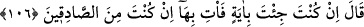
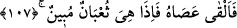

babanız bizim kölemizdi ve siz bizim kölemizin çocuklarısınız.” Sonra onları köle
edindi. Onları kerpiç yapmak, toprak taşımak, bina inşa etmek ve benzeri zor işlerde
çalıştırıyordu. Mûsâ (a.s.) gelince onları, önceden atalarının vatanı olan mukaddes
topraklara götürmek istedi. Yûsuf (a.s.)’ın Mısır’a girdiği zaman ile Mûsâ (a.s.)’ın
Mısır’a girdiği zaman arasında dört yüz yıl vardır.
106. (Firavun) dedi ki: Eğer bir mucize getirdiysen ve gerçekten doğru
söylüyorsan onu göster bakalım.
Firavun “dedi: “Eğer” iddiana göre seni gönderen tarafından “bir ayet” mucize
“getirmiş isen, hakikaten doğru söylüyorsan” dâvânda sâdıksan “göster onu
bakalım.” senin benim yanımda doğruluğunu isbat etmesi için onu ortaya koy.
107. Bunun üzerine Musa asâsını yere attı. O hemen apaçık bir ejderha oluverdi!
“Bunun üzerine” Mûsâ “asâsını” elinden “attı, birden o, açıkça” durumu ortada,
yılan olduğundan kimsenin şüphe etmeyeceği ve kimsenin asâ cinsinden bir şey
olduğunda tereddüt etmeyeceği “bir ejderha” oluverdi. Sarı, erkek, çok büyük ve
boynunda atın yelesi gibi bir yele olan bir yılan haline geliverdi.
Rivayet edilir ki, Mûsâ (a.s.) asâyı yere atınca tüylü bir ejderhaya dönüştü. Yani
sırtında mızrak gibi uzun siyah tüyler vardı. Alt ve üst çenesinin arası seksen arşındı.
Alt çenesini yere, üstünü ise orada bulunan bir köşkün duvarının üzerine koydu. Sonra
Firavun’a doğru yöneldi. Firavun ondan korkup kaçmaya başladı. Kaçarken de donuna
pisledi. İnsanlar kaçışarak darmadağın oldular. İzdiham sebebiyle yirmi beş bin kişi
öldü. Firavun: Ey Mûsâ, seni peygamber gönderen aşkına şunu al. Ben sana inanıyorum
ve İsrâiloğullarını da seninle beraber göndereceğim.” diye bağırdı. Bunun üzerine Mûsâ
(a.s.) ejderhayı aldı, o da tekrar asâ oluverdi.
Ayetin işârî yorumu şöyledir: Allah Teâlâ, Mûsâ (a.s.)’ın asasını, ejderha yapmıştır.
Çünkü, o: “O asamdır” (Tâhâ, 20/18) diyerek asâyı kendisine nisbet etmiştir. Sonra da:
“Onda benim birçok ihtiyaçlarım var” (Tâhâ, 20/18) diyerek onu ihtiyaçlarının
mahalli kılmıştır. İşte bunda nefsine izafet ettiğin ve ihtiyaçlarının mahalli olarak
gördüğün her şeyin seni yutacak bir ejderha olduğuna işaret vardır. Onun için Allah
Teâlâ, Mûsâ (a.s.)’a: “Ey Mûsâ, onu yere at” (Tâhâ, 20/19) yani, ona bağlanıp
dayanma, aksi halde O onu elinde ejderha kılmaya kadirdir, buyurmuştur. et-
Te’vîlâtü’n-Necmiyye’de böyle geçmektedir.